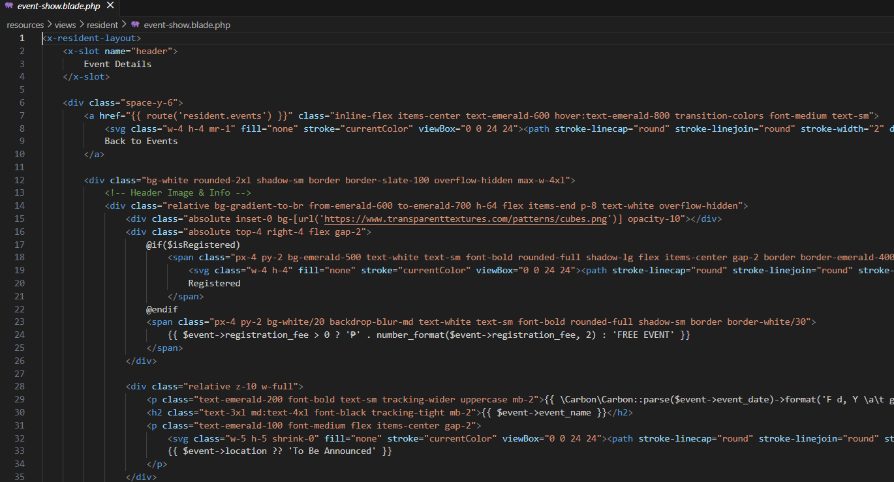
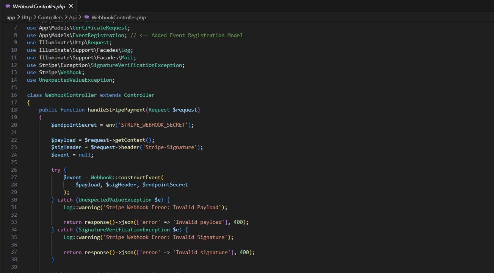
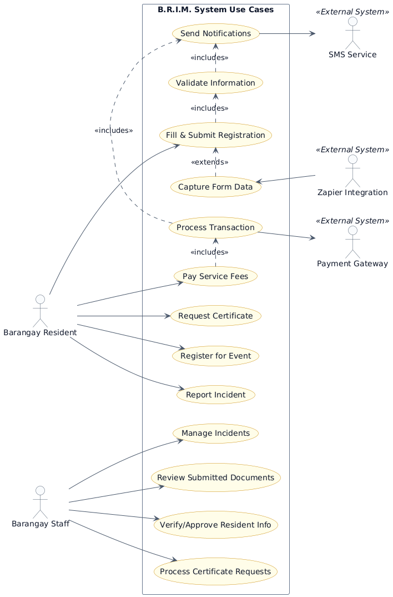

Frontend Implementation Update
Focused on developing a modern, responsive user interface for the Resident Portal. We implemented a dynamic dashboard, refined navigation elements, and built functional, paginated pages for module features like certificate requests and incident reporting.

Backend Architecture & API Update
Finalized the backend logic and routing for the Resident Portal. Key updates include setting up controllers and database management operations for incident reports, certificate requests, and event tracking to ensure smooth data integration with the frontend.

Core System Build & Architecture Documentation
Focused heavily on building out the admin and resident portal's frontend interfaces and integrating them with the backend database. We also finalized and published our comprehensive system documentation to the project site, which now includes the complete Database Schema, Entity Relationship Diagram (ERD), Use Case diagrams, Data Flow Diagram (DFD), and C4 Architectural models. Additionally, our Systems Integration & Architecture explainer video was embedded for the presentation.
Next Step: Finalize the remaining C4 components before moving into end-to-end system testing.

System Diagrams Update
Completed and structured the core system diagrams mapping out the complete architecture. This establishes a clear visual guide for data flows, entity relationships, and operational boundaries across all system modules.

B.R.I.M.S. Core BPMN Diagram
Successfully mapped out the end-to-end resident registration and service request workflow. This diagram illustrates the data flow between the resident portal, Zapier automations, the central database, and the barangay staff verification dashboard.
Next Step: With the process flow approved, the team will begin setting up the repository, ERD, and database schema.